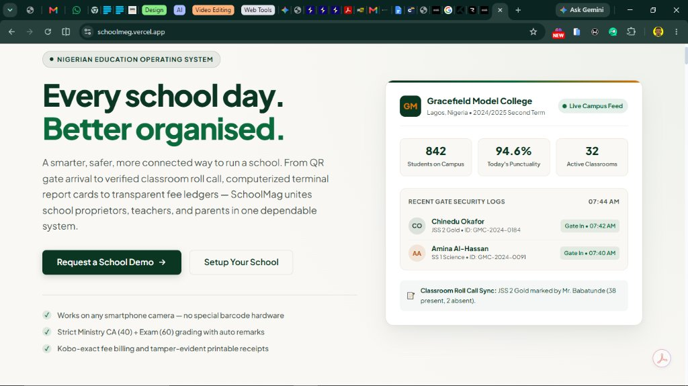

Project Overview
SchoolMeg is an all-in-one educational management system built to digitize daily administrative, academic, and financial operations for Nigerian primary and secondary schools. It replaces paper logbooks, manual report card calculations, unverified school gate entries, and messy cash receipts with a centralized digital infrastructure.
The platform is architected with strict multi-tenant data isolation, ensuring that independent educational institutions operate securely on a single backend infrastructure with zero data leakage. SchoolMeg unites six distinct user roles: Super Administrators, School Owners/Principals, Teachers, Gate Stewards, Bursars/Accountants, and Parents.

The Real-World Problem
Conventional school administration in developing educational markets suffers from pervasive operational bottlenecks:
✕ The Paper-Based Challenges
- Manual Gate Logs & Safety Risks: Security guards jotting names in paper notebooks, making it impossible for parents to verify whether their child safely entered or left school premises.
- Slow & Error-Prone Report Cards: Teachers spending weeks manually computing Continuous Assessment (CA) scores, exam totals, class rankings, and grade remarks by hand.
- Float Precision Accounting Errors: Cash and tuition fee calculations using floating-point math often accumulate decimal rounding discrepancies in financial records.
- Disconnected Parent Engagement: Parents relying on physical paper sheets that frequently get lost in student backpacks.
✓ The SchoolMeg Engineering Solutions
- Real-Time Gate Scanning State Machine: Cryptographic QR code scanning recording instantaneous timestamped arrival and departure events with audio confirmations.
- Automated Nigerian Grading Engine: Real-time CA + Exam calculation, class position ranking with tie-breaking, and official terminal report card sheet generation.
- Integer-Kobo Financial Accounting: All tuition fees, discounts, and payments tracked strictly in kobo integers (₦1 = 100 kobo), eliminating decimal arithmetic anomalies.
- Unified Multi-Child Parent Portal: Mobile dashboard enabling parents to view gate check-in timelines, report cards, and payment ledgers across multiple siblings with one login.
The Digital Solution Developed
SchoolMeg was engineered from the ground up as a comprehensive multi-portal application:
ISO CR80 ID Card Studio
Interactive visual designer rendering standard ISO/IEC 7810 ID cards (85.60mm × 53.98mm) with high-res photo badges and opaque cryptographic QR codes.
Gate & Classroom Scanner
Camera-integrated scanner PWA executing arrival/departure state transitions, duplicate scan debounce locks, and classroom roll-call sessions.
Academic & Results Engine
Configurable Nigerian grading standards (Nursery, Primary, Junior Secondary, Senior Secondary) with automated rank calculation and PDF export.
Integer-Kobo Bursary
Tuition assessment, sibling discount algorithms, partial installment tracking, and printable Nigerian standard fee receipts.
Core Implemented Modules
- Tenant Isolation & Setup Wizard: 4-step school onboarding wizard collecting institutional metadata, LGA, academic session/terms, and initializing root administrators with scoped tenancy keys.
- Atomic Sequential ID Numbering: Database sequence counters generating non-colliding admission numbers (e.g.
SCH/2026/0001) and staff codes across concurrent registration requests. - Parent Guardian Deduplication: Automatically links newly registered students to existing parent accounts matching telephone records to avoid duplicate parent profiles.
- Cryptographic Opaque QR Barcodes: QR payloads formatted as
SM-STU-[CODE]-[HEX16]ensuring students or unauthorized parties cannot forge physical ID cards. - Comprehensive Audit Trail: Immutable audit logging capturing every score modification, payment transaction, student profile change, and role assignment.
System Architecture & Data Isolation
Multi-tenancy is enforced at the database level by indexing and scoping every query by schoolId:
idCardService, resultCalculationService (grades, averages, rankings), auditLogger, uploadService (Cloudinary with base64 fallback).School, Student, Staff, GateAttendanceEvent, SubjectResult, FeeAssessment, PaymentTransaction. Indexed on { schoolId: 1, ... }.My Technical Contributions
- Multi-Tenant Architecture Design: Built the database boundary system ensuring complete data isolation between schools hosted on the shared cluster.
- ISO CR80 ID Card Engine: Developed the printable ID card template system calibrated to exact ISO physical measurements (85.60mm × 53.98mm) using high-precision CSS print units.
- Cryptographic QR Gate Scanner: Implemented the gatekeeper scanning application complete with audio cues, scan debouncing, and automated arrival/departure state transitions.
- Grading & Ranking Algorithms: Authored the academic results computation service handling CA marks, exams, grade letter assignments, and class rank computation.
- Financial Accounting System: Engineered the integer-kobo tuition billing and fee installment ledger with printable receipt formatting.
- Integration Testing: Built 7 integration test suites covering authentication, student enrollment, ID generation, gate scanning, result compilation, and bursary ledger operations.
Technology Stack
Engineering Decisions & Realities
Floating point mathematics in JavaScript (e.g. 0.1 + 0.2 === 0.30000000000000004) is notoriously dangerous in billing systems. I mandated that all fee assessments, discounts, and payments are stored and calculated as integers representing kobo (1 Naira = 100 kobo). The currency is only converted to Naira strings for display formatting at the presentation layer.
When students file through school gates, barcode cameras can fire 10 frames per second on the same physical card. I implemented a time-window debounce cache (5-second throttle) on the client scanner coupled with an atomic server-side state machine that prevents duplicate arrival scans.
Schools print plastic ID cards using thermal PVC card printers (e.g., Zebra, Evolis). Standard web pages scale unpredictably. I engineered pure CSS @page rules with zero print margins, exact millimetric dimensions, and 300 DPI vector rendering so cards print seamlessly directly from the browser without third-party design software.
Testing & Verification Suite
The backend architecture was validated through 7 comprehensive integration test suites using Vitest, asserting every critical operational workflow:
Operational Impact & Value
SchoolMeg modernizes educational institutions into efficient, accountable digital ecosystems. School principals gain real-time visibility into student attendance and fee collection, teachers generate error-free terminal reports in minutes instead of weeks, and parents enjoy complete peace of mind knowing the exact time their children enter and leave school gates.